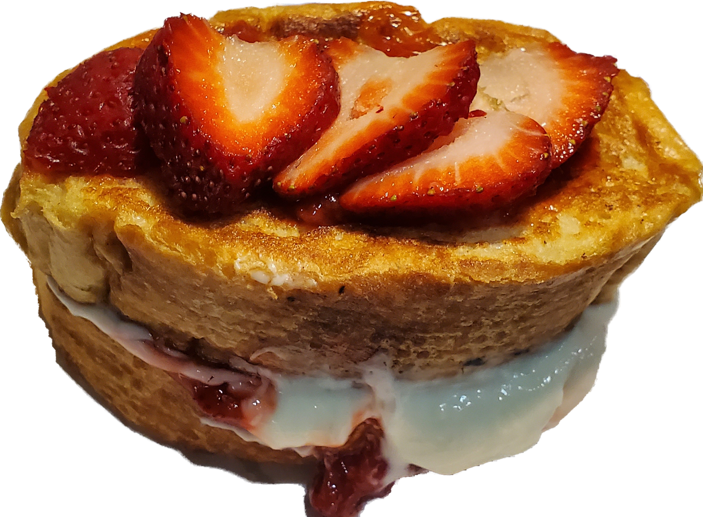

~This Week's Special~
Strawberry Cheesecake Stuffed French Toast
Delicious thick sliched brioche bread, pan fried and stuffed with our Signature cream cheese filling and fresh homemade strawberry glaze. Served with your choice of sausage links, sausage patties, bacon, or grilled ham. $9.99